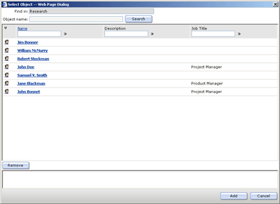

This section provides information about the format of settings for entries used in the forms defined in the attribute edsaWIForms.
An entry is a group of form elements such as text boxes, check boxes, option buttons, and command buttons. Each entry is used to view and modify a value of a certain object property.
Settings for entries are stored in the attribute edsaWIEntries. Modifying this attribute, you can set or modify properties of entries, such as the entry type, entry caption, etc. You can also create your custom entries.
XML Elements
The attribute edsaWIEntries stores information in the Extensible Markup Language (XML) format. XML elements you can use are listed below.
Important:
After you modify the attribute edsaWIEntries, for changes to take effect, reload the Web Interface.
Entries
Describes the collection of entries.
Parent Elements: None
Child Elements: FormEntry
Attributes:
|
Name |
Description |
|---|---|
|
CustomizationVersion |
Required. Identifies the current customization version number. Must be the same for all attributes of the WorkingCopy object. Important: The value of this attribute depends on the application version. This value is stored into the attribute edsaWITemplateVersion of the WI configuration container objects (see Storing Customization Settings). |
FormEntry
Describes an entry and its properties.
Parent Elements: Entries
Child Elements: Setting
Attributes:
|
Name |
Description |
|---|---|
|
Arguments |
Optional. String. Contains the value to be set to the object's properties used by the entry. |
|
DescriptionResID |
Optional. Identifier of the string constant containing a description of the entry. |
|
DontShowCaption |
Optional. Specifies whether the entry caption is displayed on the form. The possible values are: False (default value) - The Web Interface displays the entry caption. True - The Web Interface does not display the entry caption. |
|
EntryType |
Required. The type of the entry. The possible values are: 0 - Custom entry. For more information, see Creating a Custom Entry. 1 - Auto entry. An auto entry depends on the syntax of the directory object's property viewed or modified with that entry. 3 - Text label entry. The text label entry displays the value of the property the entry uses. 8 - Static text entry (text area). Use this entry type to display static text specified by the settings of the entry. |
|
Flags (deprecated) |
Optional. An integer that determines a behavior of certain predefined entries. For example, when this attribute is set to 2, the Web Interface displays the Large Integer attributes (such as lastLogon, lastLogoff) in the standard Date-Time format: YYYY-MM-DDThh:mm:ssTZD. |
|
FunctionAction |
Optional. Specifies functions used for creating the custom entries (EntryType=0). When this attributes is set, the appropriate custom entry will be created using the functions Get_<FunctionAction's value> and Set_<FunctionAction's value>. When this attribute is not set, the functions Get_<Entry ID> and Set_<Entry_ID> are used to create the custom entry. The <Entry_ID> is the value of the attribute ID, described below in this table. Notes:
|
|
ID |
Required. Unique identifier of the entry. The entry identifier cannot begin with a number, and can only contain "A-Z", "a-z", and "0-9" characters. Note that the attribute edsaWIForms must contain the FormEntry element with the same attribute ID. |
|
IsHidden |
Optional. Boolean. Specifies whether the entry is hidden. The possible values are: False (default value)
- The entry is visible. |
|
IsStatic |
Optional. Boolean. Specifies whether the entry is a static label. The possible values are: False (default value) - The entry is not a label. True - The entry is a label. |
|
Properties |
Required. A comma-separated list of the object property's ldapDisplayNames used by the entry. |
|
ReadOnly |
Optional. Specifies whether the Web Interface's user can modify the entry's value(s). The possible values are: False (default value)
- The user can modify the entry's value(s). |
|
ResID |
Required. Identifier of the string constant containing the caption of the entry when it is displayed on the form, such as Description on the User Properties form. |
|
SingleValue |
Optional. Specifies whether an object's multi-valued property associated with the entry will be processed as a single-valued property. The possible values are: True - Setting this attribute to True for a multi-valued property, have the Web Interface consider that property as a single-valued one. Note: The SingleValue attribute is used only for the auto entries (EntryType=1) and for multi-valued object's properties. Otherwise, setting this attribute takes no effect. |
|
ToolTipResID |
Optional. Identifier of the string constant containing the entry tooltip. |
Note:
Identifiers and values of the string constants are saved in the attribute edsaWIStrings. We strongly recommend that the names of your custom string constants, such as identifiers or function names, begin with the prefix cst_, for example cst_employeeID, cst_jobDescriptionIDControl, etc.
Caution:
The Flags attribute is considered obsolete. While this attribute is still
supported in the current version of Active Roles, it may be removed
in the future. When developing new applications, you should avoid using
this attribute. When modifying existing applications, you are strongly
encouraged to remove any dependency on this attribute.
Setting
Describes additional properties of certain entries. For example, using these elements you can customize the Select Object dialog box displayed when you click auto entries (EntryType=1) used to modify the object's attributes conforming to the DN syntax (see Example).
Parent Elements: FormEntry
Child Elements: None
Attributes:
|
Name |
Description |
|---|---|
|
Name |
Required. The property name. |
|
Value |
Required. The property value. |
Note:
All elements have the optional attribute PlainTextLabel that allows you to label elements. The use of your custom labels allows your applications to easily update or remove custom elements from the configuration settings.
Example: Customization of the Select Object Dialog Box
This example illustrates how to customize the Select Object dialog box displayed when you click the auto entry (EntryType=1) used to modify a user object virtual attribute edsvaManagers that contains DN's of the user's managers.
To customize the Select Object dialog box
For the User object, define the multivalued stored custom virtual attribute edsvaManagers that conforms to the syntax DN. For information about how to create and modify your custom virtual attributes, refer to Using Virtual Attributes.
Add the following code to the attribute edsaWIEntries:
<FormEntry ID="edsvaManagers" ResID="CST_ID_STR" DescriptionResID="" ToolTipResID=""
Properties="edsvaManagers" SingleValue="false" ReadOnly="false" EntryType="1" DontShowCaption="false"
IsHidden="false" IsStatic="false" Flags="0" Arguments="" FunctionAction="">
<Setting Name="Filters" Value="(objectClass=user)" />
<Setting Name="DNListAttributes" Value="name,description,title" />
<Setting Name="ResultAutomatic" Value="False" />
<Setting Name="ShowFindIn" Value="True" />
<Setting Name="ShowObjectName" Value="True" />
<Setting Name="SearchRootDN" Value=<Container's DN> />
<Setting Name="SearchScope" Value="2" />
<Setting Name="UseAsq" Value="False" />
<Setting Name="ASQAttribute" Value="" />
<Setting Name="ShowSearchButton" Value="False" />
</FormEntry>In the attribute edsaWIForms, define the child element <FormEntry ID="edsvaManagers" /> for the element
<FormTab ID="general" ...> under <Form ID="UserProperties" FormType="1" ... >. Your changes will be similar to the following code snippet:
<Form ID="UserProperties" FormType="1" ResID="WIS_FORM_USER_PROPERTIES" TargetClass="user"
DescriptionResID="">
<FormTab ID="general" ResID="WIS_UP_GENERAL">
<FormEntry ID="edsvaManagers"/>
.......
</FormTab>
</Form>In the attribute edsaWIStrings, define the constant CST_ID_STR. Set this constant to any string value, such as "Employee's Manager":
<Res ID="CST_ID_STR" Value="Employee's Managers"/>When finished, reload the Web Interface for changes to take effect.
Note:
The <Container's DN> refers
to the distinguished name of the container where you want the search to
start. For example:
<Setting Name="SearchRootDN" Value="Ou=Sales,DC=MyCompany,DC=Com">
To view the results of the customization, run the Web Interface and perform the following steps:
On the Navigation Bar, point to Directory Management and then click Active Directory. This displays a list of the managed Active Directory domains.
In the List of Objects area, click a user object you want to administer.
On the Command Menu of the user object, click General Properties. In the right pane, under Employee's Managers, the Web interface lists the user's managers if any. To modify this list, click Add beneath the list, and complete the Select Object dialog box.
The Select Object dialog box will be similar to the following screen:

The attributes Name of the elements Setting defined in Step 2 of the first procedure allow you to customize the Select Object dialog box in the following way:
The "Name" attribute value | Description |
|---|---|
Filters | String. Contains the LDAP search filter that defines criteria for objects to be found and displayed in the dialog box. |
DNListAttributes | String. Contains a comma separated list of LDAP display names of the attributes to be displayed in the dialog box. |
ResultAutomatic | Boolean. When False, in the dialog box, you need to click the link "Click here to display the objects" to view the list of the found objects. |
ShowFindIn | Boolean. When True, the Find in text box is displayed. |
ShowObjectName | Boolean. When True, the Object name text box is displayed. |
SearchRootDN | String. Specifies a container object, such as a domain or Organizational Unit, where the search will start. |
SearchScope | String. Specifies the depth of the search. The possible values are:
For more information, see Searching for Directory Objects Using ADO. |
UseAsq | Boolean. When True, the ASQ search will started. For more information, refer to Searching Using an Attribute Scope Query. |
ASQAttribute | String. Contains the name of the DN type attribute you want to search. For more information, refer to Searching Using an Attribute Scope Query. |
ShowSearchButton | Boolean. When True, the Search button next to the Object name box is displayed. |
 Related Topics
Related Topics{kind=link}
{kind=link}